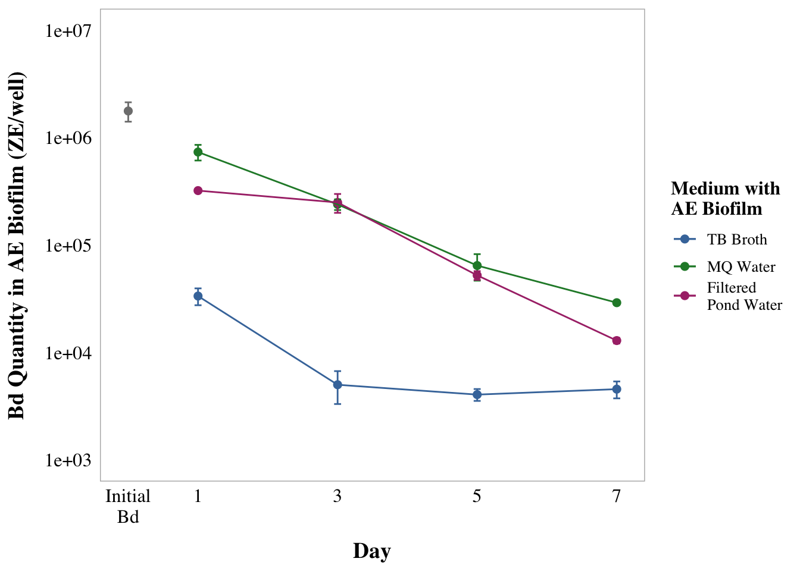
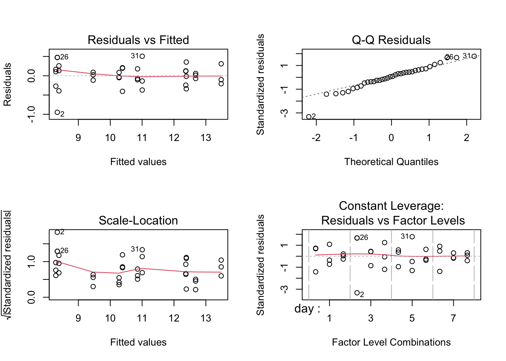

## read in and clean data
library(tidyverse) # for cleaning and viewing data
library(broom) # cleaning
library(here) # for importing data
library(car) # stats tests like Levene's
library(multcomp)
library(gt)
library(modelsummary)
library(emmeans)
fig_3b_raw <- read.csv(here("data", "final_NCOS_2024_reformatted_for_R.xlsx - Fig3B.csv"))
# set up custom theme
myCustomTheme <- function() {
theme_light() +
theme(axis.text = element_text(size = 12, family = "Times", color = "black"),
axis.title.x = element_text(margin = margin(t = 10), size = 14, face = "bold", family = "Times", color = "black"), # Add space between x-axis label and axis
axis.title.y = element_text(margin = margin(r = 10), size = 14, face = "bold", family = "Times", color = "black"), # Add space between y-axis label and axis
title = element_text(size = 12, face = "bold", family = "Times"),
plot.caption = element_text(size = 10, face = "italic", family = "Times"),
legend.text = element_text(size = 10, family = "Times"), # Increase legend text size
panel.grid.major.x = element_blank(), # Remove major vertical grid lines
panel.grid.minor.x = element_blank(), # Remove minor vertical grid lines
panel.grid.major.y = element_blank(), # Remove major horizontal grid lines
panel.grid.minor.y = element_blank(), # Remove minor horizontal grid lines
strip.text = element_text(size = 12, face = "bold", family = "Times", color = "black"), # Set strip text style
strip.background = element_rect(fill = "white", color = "grey"), # Set strip background to white, # color = "black"
axis.ticks = element_blank() # Remove x and y axis ticks
)}Tukey Tatum
Experiment:
Bd was incubated with aquatic environmental biofilm collected from one pond at UCSB in a 12-well plate, incubated in one of three media (TB broth, MilliQ control water, and microbe depleted pond water filtered through a 0.22 micron filter) and the biofilm was destructively sampled and Bd was quantified the AE biofilm at day 1, 3, 5, 7.
Statistical test
Test: 2-way ANOVA with outcome variable of log-transformed Bd quantity and predictor variables of the day and medium with the AE biofilm and Bd and their interaction (logBd ~ day*medium). The log-transformed Bd quantity data pass the assumptions of an ANOVA.
Predictors:
Day: 1, 3, 5, 7 (as factors)
Medium: medium incubated with Bd and aquatic environmental biofilm, either none (milliQ), adding TB proth, or adding filtered (aka microbe depleted) pond water.
Load in data and libraries
Data clean
# add column for microbes or no
ae <- fig_3b_raw %>%
rename(sample_ID = Adherent.sample.ID) %>%
# add columns for components y/n
# add column for TB or no
mutate(TB = case_when(
str_detect(sample_ID, "TB") ~ "y",
TRUE ~ "n"
)) %>%
# add column for PW or no
mutate(PW = case_when(
str_detect(sample_ID, "PW") ~ "y",
TRUE ~ "n"
))
# control data for ae
ae_control_data <- ae %>%
filter(day == 0) %>%
dplyr::select(day, adh)
# no day 0 for stats
ae_noday0 <- ae %>%
filter(day != 0) %>%
mutate(log_adh = log(adh)) # note: no zeroes so not log + 1
# quick check: we want day as a FACTOR
ae_noday0 <- ae_noday0 %>%
mutate(day = as.factor(day)) %>%
# column for medium
mutate(medium = sample_ID)
str(ae_noday0$day) Factor w/ 4 levels "1","3","5","7": 1 2 3 4 1 2 3 4 1 2 ...# set MQ as reference
ae_noday0$sample_ID <- factor(ae_noday0$sample_ID)
ae_noday0$sample_ID <- relevel(ae_noday0$sample_ID, ref = "MQ+AEbiofilm")EDA
ae_summary <- ae %>%
group_by(day, sample_ID) %>%
reframe(mean = mean(adh), # calculate the mean
n = length(adh), # count the number of observations
df = n - 1, # calculate the degrees of freedom
sd = sd(adh), # calculate the standard deviation
se = sd/sqrt(n), # calculate the standard error
) %>%
# add column for TB or no
mutate(TB = case_when(str_detect(sample_ID, "TB") ~ "y", TRUE ~ "n")) %>%
# add column for PW or no
mutate(PW = case_when(str_detect(sample_ID, "PW") ~ "y", TRUE ~ "n"))
ae_summary %>%
# reorder to match Renwei's plot
mutate(sample_ID = factor(sample_ID,
levels = c("1%TB+AEbiofilm", "MQ+AEbiofilm",
"PW+AEBiofilm", "Added Bd" ))) %>%
ggplot(aes(x = day,
y = mean,
color = sample_ID)) +
geom_point(size = 2) +
geom_errorbar(aes(ymin = mean - se, # plot the standard error
ymax = mean + se),
width = 0.1) +
geom_line() +
scale_y_log10(limits = c(1e3, 1e7),
breaks = c(1e3, 1e4, 1e5, 1e6, 1e7)) +
# vibes
labs(x = "Day",
y = "Bd Quantity in AE Biofilm (ZE/well)",
color = "Medium with\nAE Biofilm")+ # Title for color legend
scale_color_manual(values = c("1%TB+AEbiofilm"= "#4477AA",
"MQ+AEbiofilm" = "#228833",
#"Added Bd" = "darkgrey",
"PW+AEBiofilm" = "#AA3377"),
labels = c("1%TB+AEbiofilm" = "TB Broth",
"MQ+AEbiofilm" = "MQ Water",
"PW+AEBiofilm" = "Filtered\nPond Water",
"Added Bd" = "Initial Bd")) + # Custom labels
myCustomTheme()+
scale_x_continuous(breaks = c(0, 1, 3, 5, 7),
labels = c("Initial\nBd", "1", "3", "5", "7"))
Current legend: Inhibitory effect of aquatic environmental biofilm on Bd growth. Bd was incubated with aquatic environmental biofilm collected from one pond at UCSB in a 12-well plate, incubated in one of three media (TB broth, MilliQ control water, and microbe depleted pond water filtered through a 0.22 micron filter) and the biofilm was destructively sampled and Bd was quantified the AE biofilm at day 1, 3, 5, 7. Scatterplot of Bd quantity in the aquatic environmental biofilm from UCSB. X-axis indicates the duration of Bd in the microorganism-depleted pond water (“Filtered pond water”), or 1%TB or MQ. Y-axis represents the mean Bd quantity of the triplicate data as zoospore equivalents per well, and the bar represents the standard error.
2 way anova
Note: Cherie says homoskedasticity is good enough
# build model
mod1 <- aov(log_adh ~ day*medium,
data = ae_noday0)
# diagnostic plot
par(mfrow = c(2,2))
plot(mod1) # kinda not homoskedastic but Cherie says it is good enough
# look at results
summary(mod1) Df Sum Sq Mean Sq F value Pr(>F)
day 3 40.24 13.413 110.10 3.64e-14 ***
medium 2 60.07 30.036 246.55 < 2e-16 ***
day:medium 6 7.42 1.236 10.14 1.30e-05 ***
Residuals 24 2.92 0.122
---
Signif. codes: 0 '***' 0.001 '**' 0.01 '*' 0.05 '.' 0.1 ' ' 1AIC(mod1) # 37.78083 better than null[1] 37.78083Prettier anova table
anova_output <- tidy(mod1)
anova_output %>%
dplyr::select(term, df, sumsq, meansq, statistic, p.value) %>%
gt() %>%
tab_header(
title = "ANOVA Table"
) %>%
fmt_number(
columns = c(sumsq, meansq, statistic),
decimals = 2
) %>%
cols_label(
term = "Term",
df = "Df",
sumsq = "Sum Sq",
meansq = "Mean Sq",
statistic = "F value",
p.value = "P-value"
) %>% # scientific number format for values <0.001 in p values
fmt_scientific(
columns = c(p.value),
decimals = 1,
rows = p.value < 0.001
) %>%
# 3 decimals for p values >=0.001
fmt_number(
columns = c(p.value),
decimals = 3,
rows = p.value >= 0.001
)| ANOVA Table | |||||
| Term | Df | Sum Sq | Mean Sq | F value | P-value |
|---|---|---|---|---|---|
| day | 3 | 40.24 | 13.41 | 110.10 | 3.6 × 10−14 |
| medium | 2 | 60.07 | 30.04 | 246.55 | 1.0 × 10−16 |
| day:medium | 6 | 7.42 | 1.24 | 10.14 | 1.3 × 10−5 |
| Residuals | 24 | 2.92 | 0.12 | NA | NA |
Post Hoc using TukeyHSD
TukeyHSD(mod1) # all days sig diff from each other, all media sig diff from each other Tukey multiple comparisons of means
95% family-wise confidence level
Fit: aov(formula = log_adh ~ day * medium, data = ae_noday0)
$day
diff lwr upr p adj
3-1 -1.1493419 -1.603234 -0.6954497 0.0000018
5-1 -2.1306208 -2.584513 -1.6767286 0.0000000
7-1 -2.8046545 -3.258547 -2.3507623 0.0000000
5-3 -0.9812789 -1.435171 -0.5273867 0.0000210
7-3 -1.6553126 -2.109205 -1.2014204 0.0000000
7-5 -0.6740337 -1.127926 -0.2201415 0.0021838
$medium
diff lwr upr p adj
MQ+AEbiofilm-1%TB+AEbiofilm 2.9323391 2.5764935 3.28818480 0.0000000
PW+AEBiofilm-1%TB+AEbiofilm 2.4957994 2.1399538 2.85164510 0.0000000
PW+AEBiofilm-MQ+AEbiofilm -0.4365397 -0.7923854 -0.08069402 0.0142222
$`day:medium`
diff lwr upr p adj
3:1%TB+AEbiofilm-1:1%TB+AEbiofilm -2.04493896 -3.07249206 -1.01738586 0.0000113
5:1%TB+AEbiofilm-1:1%TB+AEbiofilm -2.09173123 -3.11928433 -1.06417813 0.0000078
7:1%TB+AEbiofilm-1:1%TB+AEbiofilm -1.99414642 -3.02169952 -0.96659332 0.0000169
1:MQ+AEbiofilm-1:1%TB+AEbiofilm 3.09761537 2.07006227 4.12516848 0.0000000
3:MQ+AEbiofilm-1:1%TB+AEbiofilm 1.98759548 0.96004238 3.01514858 0.0000179
5:MQ+AEbiofilm-1:1%TB+AEbiofilm 0.61984147 -0.40771163 1.64739458 0.5802121
7:MQ+AEbiofilm-1:1%TB+AEbiofilm -0.10651243 -1.13406553 0.92104068 0.9999997
1:PW+AEBiofilm-1:1%TB+AEbiofilm 2.29587354 1.26832044 3.32342665 0.0000016
3:PW+AEBiofilm-1:1%TB+AEbiofilm 2.00280682 0.97525371 3.03035992 0.0000158
5:PW+AEBiofilm-1:1%TB+AEbiofilm 0.47351640 -0.55403671 1.50106950 0.8683022
7:PW+AEBiofilm-1:1%TB+AEbiofilm -0.91981565 -1.94736875 0.10773746 0.1093965
5:1%TB+AEbiofilm-3:1%TB+AEbiofilm -0.04679227 -1.07434537 0.98076083 1.0000000
7:1%TB+AEbiofilm-3:1%TB+AEbiofilm 0.05079254 -0.97676056 1.07834564 1.0000000
1:MQ+AEbiofilm-3:1%TB+AEbiofilm 5.14255433 4.11500123 6.17010744 0.0000000
3:MQ+AEbiofilm-3:1%TB+AEbiofilm 4.03253444 3.00498134 5.06008754 0.0000000
5:MQ+AEbiofilm-3:1%TB+AEbiofilm 2.66478043 1.63722733 3.69233354 0.0000001
7:MQ+AEbiofilm-3:1%TB+AEbiofilm 1.93842653 0.91087343 2.96597964 0.0000266
1:PW+AEBiofilm-3:1%TB+AEbiofilm 4.34081250 3.31325940 5.36836561 0.0000000
3:PW+AEBiofilm-3:1%TB+AEbiofilm 4.04774578 3.02019267 5.07529888 0.0000000
5:PW+AEBiofilm-3:1%TB+AEbiofilm 2.51845536 1.49090225 3.54600846 0.0000003
7:PW+AEBiofilm-3:1%TB+AEbiofilm 1.12512331 0.09757021 2.15267642 0.0234402
7:1%TB+AEbiofilm-5:1%TB+AEbiofilm 0.09758481 -0.92996829 1.12513791 0.9999999
1:MQ+AEbiofilm-5:1%TB+AEbiofilm 5.18934660 4.16179350 6.21689970 0.0000000
3:MQ+AEbiofilm-5:1%TB+AEbiofilm 4.07932671 3.05177361 5.10687981 0.0000000
5:MQ+AEbiofilm-5:1%TB+AEbiofilm 2.71157270 1.68401960 3.73912581 0.0000001
7:MQ+AEbiofilm-5:1%TB+AEbiofilm 1.98521880 0.95766570 3.01277191 0.0000182
1:PW+AEBiofilm-5:1%TB+AEbiofilm 4.38760477 3.36005167 5.41515788 0.0000000
3:PW+AEBiofilm-5:1%TB+AEbiofilm 4.09453805 3.06698494 5.12209115 0.0000000
5:PW+AEBiofilm-5:1%TB+AEbiofilm 2.56524763 1.53769452 3.59280073 0.0000002
7:PW+AEBiofilm-5:1%TB+AEbiofilm 1.17191558 0.14436248 2.19946869 0.0161067
1:MQ+AEbiofilm-7:1%TB+AEbiofilm 5.09176179 4.06420869 6.11931489 0.0000000
3:MQ+AEbiofilm-7:1%TB+AEbiofilm 3.98174190 2.95418880 5.00929500 0.0000000
5:MQ+AEbiofilm-7:1%TB+AEbiofilm 2.61398789 1.58643479 3.64154100 0.0000001
7:MQ+AEbiofilm-7:1%TB+AEbiofilm 1.88763399 0.86008089 2.91518710 0.0000404
1:PW+AEBiofilm-7:1%TB+AEbiofilm 4.29001996 3.26246686 5.31757307 0.0000000
3:PW+AEBiofilm-7:1%TB+AEbiofilm 3.99695324 2.96940013 5.02450634 0.0000000
5:PW+AEBiofilm-7:1%TB+AEbiofilm 2.46766282 1.44010971 3.49521592 0.0000004
7:PW+AEBiofilm-7:1%TB+AEbiofilm 1.07433077 0.04677767 2.10188388 0.0349376
3:MQ+AEbiofilm-1:MQ+AEbiofilm -1.11001989 -2.13757300 -0.08246679 0.0264194
5:MQ+AEbiofilm-1:MQ+AEbiofilm -2.47777390 -3.50532700 -1.45022079 0.0000004
7:MQ+AEbiofilm-1:MQ+AEbiofilm -3.20412780 -4.23168090 -2.17657470 0.0000000
1:PW+AEBiofilm-1:MQ+AEbiofilm -0.80174183 -1.82929493 0.22581127 0.2352787
3:PW+AEBiofilm-1:MQ+AEbiofilm -1.09480855 -2.12236166 -0.06725545 0.0297786
5:PW+AEBiofilm-1:MQ+AEbiofilm -2.62409897 -3.65165208 -1.59654587 0.0000001
7:PW+AEBiofilm-1:MQ+AEbiofilm -4.01743102 -5.04498412 -2.98987792 0.0000000
5:MQ+AEbiofilm-3:MQ+AEbiofilm -1.36775401 -2.39530711 -0.34020090 0.0031814
7:MQ+AEbiofilm-3:MQ+AEbiofilm -2.09410791 -3.12166101 -1.06655480 0.0000076
1:PW+AEBiofilm-3:MQ+AEbiofilm 0.30827806 -0.71927504 1.33583117 0.9927584
3:PW+AEBiofilm-3:MQ+AEbiofilm 0.01521134 -1.01234177 1.04276444 1.0000000
5:PW+AEBiofilm-3:MQ+AEbiofilm -1.51407908 -2.54163219 -0.48652598 0.0009231
7:PW+AEBiofilm-3:MQ+AEbiofilm -2.90741113 -3.93496423 -1.87985802 0.0000000
7:MQ+AEbiofilm-5:MQ+AEbiofilm -0.72635390 -1.75390700 0.30119920 0.3586125
1:PW+AEBiofilm-5:MQ+AEbiofilm 1.67603207 0.64847897 2.70358517 0.0002348
3:PW+AEBiofilm-5:MQ+AEbiofilm 1.38296534 0.35541224 2.41051845 0.0027988
5:PW+AEBiofilm-5:MQ+AEbiofilm -0.14632508 -1.17387818 0.88122803 0.9999930
7:PW+AEBiofilm-5:MQ+AEbiofilm -1.53965712 -2.56721022 -0.51210402 0.0007432
1:PW+AEBiofilm-7:MQ+AEbiofilm 2.40238597 1.37483287 3.42993907 0.0000007
3:PW+AEBiofilm-7:MQ+AEbiofilm 2.10931925 1.08176614 3.13687235 0.0000067
5:PW+AEBiofilm-7:MQ+AEbiofilm 0.58002883 -0.44752428 1.60758193 0.6677092
7:PW+AEBiofilm-7:MQ+AEbiofilm -0.81330322 -1.84085632 0.21424988 0.2194307
3:PW+AEBiofilm-1:PW+AEBiofilm -0.29306673 -1.32061983 0.73448638 0.9952000
5:PW+AEBiofilm-1:PW+AEBiofilm -1.82235715 -2.84991025 -0.79480404 0.0000692
7:PW+AEBiofilm-1:PW+AEBiofilm -3.21568919 -4.24324229 -2.18813609 0.0000000
5:PW+AEBiofilm-3:PW+AEBiofilm -1.52929042 -2.55684352 -0.50173732 0.0008115
7:PW+AEBiofilm-3:PW+AEBiofilm -2.92262246 -3.95017557 -1.89506936 0.0000000
7:PW+AEBiofilm-5:PW+AEBiofilm -1.39333205 -2.42088515 -0.36577894 0.0025645Post hoc using emmeans
# use emmeans package to get the t value
mod1 <- aov(log_adh ~ day*medium,
data = ae_noday0)
# Perform pairwise comparisons for 'day'
em_day <- emmeans(mod1, ~ day)NOTE: Results may be misleading due to involvement in interactionstukey_day <- pairs(em_day, adjust = "tukey")
# Perform pairwise comparisons for 'medium'
em_medium <- emmeans(mod1, ~ medium)NOTE: Results may be misleading due to involvement in interactionstukey_medium <- pairs(em_medium, adjust = "tukey")
# Perform pairwise comparisons for 'day * medium' (interaction)
em_interaction <- emmeans(mod1, ~ day * medium)
tukey_interaction <- pairs(em_interaction, adjust = "tukey")
tukey_day contrast estimate SE df t.ratio p.value
day1 - day3 1.149 0.165 24 6.985 <.0001
day1 - day5 2.131 0.165 24 12.949 <.0001
day1 - day7 2.805 0.165 24 17.046 <.0001
day3 - day5 0.981 0.165 24 5.964 <.0001
day3 - day7 1.655 0.165 24 10.060 <.0001
day5 - day7 0.674 0.165 24 4.097 0.0022
Results are averaged over the levels of: medium
P value adjustment: tukey method for comparing a family of 4 estimates tukey_medium contrast estimate SE df t.ratio p.value
(1%TB+AEbiofilm) - (MQ+AEbiofilm) -2.932 0.142 24 -20.579 <.0001
(1%TB+AEbiofilm) - (PW+AEBiofilm) -2.496 0.142 24 -17.515 <.0001
(MQ+AEbiofilm) - (PW+AEBiofilm) 0.437 0.142 24 3.064 0.0142
Results are averaged over the levels of: day
P value adjustment: tukey method for comparing a family of 3 estimates tukey_interaction contrast estimate SE df t.ratio
(day1 1%TB+AEbiofilm) - (day3 1%TB+AEbiofilm) 2.0449 0.285 24 7.176
(day1 1%TB+AEbiofilm) - (day5 1%TB+AEbiofilm) 2.0917 0.285 24 7.340
(day1 1%TB+AEbiofilm) - (day7 1%TB+AEbiofilm) 1.9941 0.285 24 6.997
(day1 1%TB+AEbiofilm) - (day1 MQ+AEbiofilm) -3.0976 0.285 24 -10.869
(day1 1%TB+AEbiofilm) - (day3 MQ+AEbiofilm) -1.9876 0.285 24 -6.974
(day1 1%TB+AEbiofilm) - (day5 MQ+AEbiofilm) -0.6198 0.285 24 -2.175
(day1 1%TB+AEbiofilm) - (day7 MQ+AEbiofilm) 0.1065 0.285 24 0.374
(day1 1%TB+AEbiofilm) - (day1 PW+AEBiofilm) -2.2959 0.285 24 -8.056
(day1 1%TB+AEbiofilm) - (day3 PW+AEBiofilm) -2.0028 0.285 24 -7.028
(day1 1%TB+AEbiofilm) - (day5 PW+AEBiofilm) -0.4735 0.285 24 -1.662
(day1 1%TB+AEbiofilm) - (day7 PW+AEBiofilm) 0.9198 0.285 24 3.228
(day3 1%TB+AEbiofilm) - (day5 1%TB+AEbiofilm) 0.0468 0.285 24 0.164
(day3 1%TB+AEbiofilm) - (day7 1%TB+AEbiofilm) -0.0508 0.285 24 -0.178
(day3 1%TB+AEbiofilm) - (day1 MQ+AEbiofilm) -5.1426 0.285 24 -18.045
(day3 1%TB+AEbiofilm) - (day3 MQ+AEbiofilm) -4.0325 0.285 24 -14.150
(day3 1%TB+AEbiofilm) - (day5 MQ+AEbiofilm) -2.6648 0.285 24 -9.351
(day3 1%TB+AEbiofilm) - (day7 MQ+AEbiofilm) -1.9384 0.285 24 -6.802
(day3 1%TB+AEbiofilm) - (day1 PW+AEBiofilm) -4.3408 0.285 24 -15.232
(day3 1%TB+AEbiofilm) - (day3 PW+AEBiofilm) -4.0477 0.285 24 -14.203
(day3 1%TB+AEbiofilm) - (day5 PW+AEBiofilm) -2.5185 0.285 24 -8.837
(day3 1%TB+AEbiofilm) - (day7 PW+AEBiofilm) -1.1251 0.285 24 -3.948
(day5 1%TB+AEbiofilm) - (day7 1%TB+AEbiofilm) -0.0976 0.285 24 -0.342
(day5 1%TB+AEbiofilm) - (day1 MQ+AEbiofilm) -5.1893 0.285 24 -18.209
(day5 1%TB+AEbiofilm) - (day3 MQ+AEbiofilm) -4.0793 0.285 24 -14.314
(day5 1%TB+AEbiofilm) - (day5 MQ+AEbiofilm) -2.7116 0.285 24 -9.515
(day5 1%TB+AEbiofilm) - (day7 MQ+AEbiofilm) -1.9852 0.285 24 -6.966
(day5 1%TB+AEbiofilm) - (day1 PW+AEBiofilm) -4.3876 0.285 24 -15.396
(day5 1%TB+AEbiofilm) - (day3 PW+AEBiofilm) -4.0945 0.285 24 -14.368
(day5 1%TB+AEbiofilm) - (day5 PW+AEBiofilm) -2.5652 0.285 24 -9.001
(day5 1%TB+AEbiofilm) - (day7 PW+AEBiofilm) -1.1719 0.285 24 -4.112
(day7 1%TB+AEbiofilm) - (day1 MQ+AEbiofilm) -5.0918 0.285 24 -17.867
(day7 1%TB+AEbiofilm) - (day3 MQ+AEbiofilm) -3.9817 0.285 24 -13.972
(day7 1%TB+AEbiofilm) - (day5 MQ+AEbiofilm) -2.6140 0.285 24 -9.172
(day7 1%TB+AEbiofilm) - (day7 MQ+AEbiofilm) -1.8876 0.285 24 -6.624
(day7 1%TB+AEbiofilm) - (day1 PW+AEBiofilm) -4.2900 0.285 24 -15.053
(day7 1%TB+AEbiofilm) - (day3 PW+AEBiofilm) -3.9970 0.285 24 -14.025
(day7 1%TB+AEbiofilm) - (day5 PW+AEBiofilm) -2.4677 0.285 24 -8.659
(day7 1%TB+AEbiofilm) - (day7 PW+AEBiofilm) -1.0743 0.285 24 -3.770
(day1 MQ+AEbiofilm) - (day3 MQ+AEbiofilm) 1.1100 0.285 24 3.895
(day1 MQ+AEbiofilm) - (day5 MQ+AEbiofilm) 2.4778 0.285 24 8.694
(day1 MQ+AEbiofilm) - (day7 MQ+AEbiofilm) 3.2041 0.285 24 11.243
(day1 MQ+AEbiofilm) - (day1 PW+AEBiofilm) 0.8017 0.285 24 2.813
(day1 MQ+AEbiofilm) - (day3 PW+AEBiofilm) 1.0948 0.285 24 3.842
(day1 MQ+AEbiofilm) - (day5 PW+AEBiofilm) 2.6241 0.285 24 9.208
(day1 MQ+AEbiofilm) - (day7 PW+AEBiofilm) 4.0174 0.285 24 14.097
(day3 MQ+AEbiofilm) - (day5 MQ+AEbiofilm) 1.3678 0.285 24 4.799
(day3 MQ+AEbiofilm) - (day7 MQ+AEbiofilm) 2.0941 0.285 24 7.348
(day3 MQ+AEbiofilm) - (day1 PW+AEBiofilm) -0.3083 0.285 24 -1.082
(day3 MQ+AEbiofilm) - (day3 PW+AEBiofilm) -0.0152 0.285 24 -0.053
(day3 MQ+AEbiofilm) - (day5 PW+AEBiofilm) 1.5141 0.285 24 5.313
(day3 MQ+AEbiofilm) - (day7 PW+AEBiofilm) 2.9074 0.285 24 10.202
(day5 MQ+AEbiofilm) - (day7 MQ+AEbiofilm) 0.7264 0.285 24 2.549
(day5 MQ+AEbiofilm) - (day1 PW+AEBiofilm) -1.6760 0.285 24 -5.881
(day5 MQ+AEbiofilm) - (day3 PW+AEBiofilm) -1.3830 0.285 24 -4.853
(day5 MQ+AEbiofilm) - (day5 PW+AEBiofilm) 0.1463 0.285 24 0.513
(day5 MQ+AEbiofilm) - (day7 PW+AEBiofilm) 1.5397 0.285 24 5.403
(day7 MQ+AEbiofilm) - (day1 PW+AEBiofilm) -2.4024 0.285 24 -8.430
(day7 MQ+AEbiofilm) - (day3 PW+AEBiofilm) -2.1093 0.285 24 -7.401
(day7 MQ+AEbiofilm) - (day5 PW+AEBiofilm) -0.5800 0.285 24 -2.035
(day7 MQ+AEbiofilm) - (day7 PW+AEBiofilm) 0.8133 0.285 24 2.854
(day1 PW+AEBiofilm) - (day3 PW+AEBiofilm) 0.2931 0.285 24 1.028
(day1 PW+AEBiofilm) - (day5 PW+AEBiofilm) 1.8224 0.285 24 6.395
(day1 PW+AEBiofilm) - (day7 PW+AEBiofilm) 3.2157 0.285 24 11.284
(day3 PW+AEBiofilm) - (day5 PW+AEBiofilm) 1.5293 0.285 24 5.366
(day3 PW+AEBiofilm) - (day7 PW+AEBiofilm) 2.9226 0.285 24 10.255
(day5 PW+AEBiofilm) - (day7 PW+AEBiofilm) 1.3933 0.285 24 4.889
p.value
<.0001
<.0001
<.0001
<.0001
<.0001
0.5802
1.0000
<.0001
<.0001
0.8683
0.1094
1.0000
1.0000
<.0001
<.0001
<.0001
<.0001
<.0001
<.0001
<.0001
0.0234
1.0000
<.0001
<.0001
<.0001
<.0001
<.0001
<.0001
<.0001
0.0161
<.0001
<.0001
<.0001
<.0001
<.0001
<.0001
<.0001
0.0349
0.0264
<.0001
<.0001
0.2353
0.0298
<.0001
<.0001
0.0032
<.0001
0.9928
1.0000
0.0009
<.0001
0.3586
0.0002
0.0028
1.0000
0.0007
<.0001
<.0001
0.6677
0.2194
0.9952
0.0001
<.0001
0.0008
<.0001
0.0026
P value adjustment: tukey method for comparing a family of 12 estimates Results write up
A two-way ANOVA revealed that there was a statistically significant difference in Bd load across days (F(3, 24) = 110.100, p = p <0.0001), across the media (F(2, 24) = 246.55, p <0.0001), and the interaction between the effects of day and medium were also significant (F(6, 24) = 10.145, p = p <0.0001). Bd was significantly lower with each day (Tukey-Kramer with 95% family-wise confidence level, p <0.005 for all) and TB plus biofilm has most Bd inhibition power, followed by pond water with no microbes, then by milliQ with the least inhibition power (Tukey-Kramer with 95% family-wise confidence level, p <0.05 for all). what do I even say for the interactions?
Big ol’ table emmeans
# Convert Tukey emmeans results to data frames
tukey_day_df <- as.data.frame(tukey_day)
tukey_medium_df <- as.data.frame(tukey_medium)
tukey_interaction_df <- as.data.frame(tukey_interaction)
# Add labels to indicate which factor the comparison refers to
tukey_day_df <- tukey_day_df %>% mutate(factor = "Day")
tukey_medium_df <- tukey_medium_df %>% mutate(factor = "Medium")
tukey_interaction_df <- tukey_interaction_df %>% mutate(factor = "Interaction")
all_tukey_df <- bind_rows(tukey_day_df, tukey_medium_df, tukey_interaction_df)all_tukey_df %>%
dplyr::select(factor, contrast, estimate, SE, df, t.ratio, p.value) %>%
gt() %>%
# change column names
cols_label(
factor = "Comparison",
contrast = "Group Comparison",
estimate = "Estimate",
SE = "Standard Error",
df = "Degrees of Freedom",
t.ratio = "t-Ratio",
p.value = "p-value"
) %>%
# update header for table
tab_header(
title = "Emmeans Post-hoc Test Results"
) %>%
# 3 decimal places
fmt_number(
columns = c(estimate, SE, t.ratio),
decimals = 3
) %>%
# scientific number format for values <0.001 in p values
fmt_scientific(
columns = c(p.value),
decimals = 1,
rows = p.value < 0.001
) %>%
# 3 decimals for p values >=0.001
fmt_number(
columns = c(p.value),
decimals = 3,
rows = p.value >= 0.001
) %>%
#make the headers bold
tab_style(
style = list(
cell_text(weight = "bold")
),
locations = cells_column_labels(everything()))| Emmeans Post-hoc Test Results | ||||||
| Comparison | Group Comparison | Estimate | Standard Error | Degrees of Freedom | t-Ratio | p-value |
|---|---|---|---|---|---|---|
| Day | day1 - day3 | 1.149 | 0.165 | 24 | 6.985 | 1.8 × 10−6 |
| Day | day1 - day5 | 2.131 | 0.165 | 24 | 12.949 | 1.5 × 10−11 |
| Day | day1 - day7 | 2.805 | 0.165 | 24 | 17.046 | 6.2 × 10−14 |
| Day | day3 - day5 | 0.981 | 0.165 | 24 | 5.964 | 2.1 × 10−5 |
| Day | day3 - day7 | 1.655 | 0.165 | 24 | 10.060 | 2.5 × 10−9 |
| Day | day5 - day7 | 0.674 | 0.165 | 24 | 4.097 | 0.002 |
| Medium | (1%TB+AEbiofilm) - (MQ+AEbiofilm) | −2.932 | 0.142 | 24 | −20.579 | 2.1 × 10−14 |
| Medium | (1%TB+AEbiofilm) - (PW+AEBiofilm) | −2.496 | 0.142 | 24 | −17.515 | 3.2 × 10−14 |
| Medium | (MQ+AEbiofilm) - (PW+AEBiofilm) | 0.437 | 0.142 | 24 | 3.064 | 0.014 |
| Interaction | (day1 1%TB+AEbiofilm) - (day3 1%TB+AEbiofilm) | 2.045 | 0.285 | 24 | 7.176 | 1.1 × 10−5 |
| Interaction | (day1 1%TB+AEbiofilm) - (day5 1%TB+AEbiofilm) | 2.092 | 0.285 | 24 | 7.340 | 7.8 × 10−6 |
| Interaction | (day1 1%TB+AEbiofilm) - (day7 1%TB+AEbiofilm) | 1.994 | 0.285 | 24 | 6.997 | 1.7 × 10−5 |
| Interaction | (day1 1%TB+AEbiofilm) - (day1 MQ+AEbiofilm) | −3.098 | 0.285 | 24 | −10.869 | 5.6 × 10−9 |
| Interaction | (day1 1%TB+AEbiofilm) - (day3 MQ+AEbiofilm) | −1.988 | 0.285 | 24 | −6.974 | 1.8 × 10−5 |
| Interaction | (day1 1%TB+AEbiofilm) - (day5 MQ+AEbiofilm) | −0.620 | 0.285 | 24 | −2.175 | 0.580 |
| Interaction | (day1 1%TB+AEbiofilm) - (day7 MQ+AEbiofilm) | 0.107 | 0.285 | 24 | 0.374 | 1.000 |
| Interaction | (day1 1%TB+AEbiofilm) - (day1 PW+AEBiofilm) | −2.296 | 0.285 | 24 | −8.056 | 1.6 × 10−6 |
| Interaction | (day1 1%TB+AEbiofilm) - (day3 PW+AEBiofilm) | −2.003 | 0.285 | 24 | −7.028 | 1.6 × 10−5 |
| Interaction | (day1 1%TB+AEbiofilm) - (day5 PW+AEBiofilm) | −0.474 | 0.285 | 24 | −1.662 | 0.868 |
| Interaction | (day1 1%TB+AEbiofilm) - (day7 PW+AEBiofilm) | 0.920 | 0.285 | 24 | 3.228 | 0.109 |
| Interaction | (day3 1%TB+AEbiofilm) - (day5 1%TB+AEbiofilm) | 0.047 | 0.285 | 24 | 0.164 | 1.000 |
| Interaction | (day3 1%TB+AEbiofilm) - (day7 1%TB+AEbiofilm) | −0.051 | 0.285 | 24 | −0.178 | 1.000 |
| Interaction | (day3 1%TB+AEbiofilm) - (day1 MQ+AEbiofilm) | −5.143 | 0.285 | 24 | −18.045 | 1.4 × 10−13 |
| Interaction | (day3 1%TB+AEbiofilm) - (day3 MQ+AEbiofilm) | −4.033 | 0.285 | 24 | −14.150 | 2.3 × 10−11 |
| Interaction | (day3 1%TB+AEbiofilm) - (day5 MQ+AEbiofilm) | −2.665 | 0.285 | 24 | −9.351 | 1.0 × 10−7 |
| Interaction | (day3 1%TB+AEbiofilm) - (day7 MQ+AEbiofilm) | −1.938 | 0.285 | 24 | −6.802 | 2.7 × 10−5 |
| Interaction | (day3 1%TB+AEbiofilm) - (day1 PW+AEBiofilm) | −4.341 | 0.285 | 24 | −15.232 | 4.7 × 10−12 |
| Interaction | (day3 1%TB+AEbiofilm) - (day3 PW+AEBiofilm) | −4.048 | 0.285 | 24 | −14.203 | 2.1 × 10−11 |
| Interaction | (day3 1%TB+AEbiofilm) - (day5 PW+AEBiofilm) | −2.518 | 0.285 | 24 | −8.837 | 3.0 × 10−7 |
| Interaction | (day3 1%TB+AEbiofilm) - (day7 PW+AEBiofilm) | −1.125 | 0.285 | 24 | −3.948 | 0.023 |
| Interaction | (day5 1%TB+AEbiofilm) - (day7 1%TB+AEbiofilm) | −0.098 | 0.285 | 24 | −0.342 | 1.000 |
| Interaction | (day5 1%TB+AEbiofilm) - (day1 MQ+AEbiofilm) | −5.189 | 0.285 | 24 | −18.209 | 1.2 × 10−13 |
| Interaction | (day5 1%TB+AEbiofilm) - (day3 MQ+AEbiofilm) | −4.079 | 0.285 | 24 | −14.314 | 1.8 × 10−11 |
| Interaction | (day5 1%TB+AEbiofilm) - (day5 MQ+AEbiofilm) | −2.712 | 0.285 | 24 | −9.515 | 7.5 × 10−8 |
| Interaction | (day5 1%TB+AEbiofilm) - (day7 MQ+AEbiofilm) | −1.985 | 0.285 | 24 | −6.966 | 1.8 × 10−5 |
| Interaction | (day5 1%TB+AEbiofilm) - (day1 PW+AEBiofilm) | −4.388 | 0.285 | 24 | −15.396 | 3.7 × 10−12 |
| Interaction | (day5 1%TB+AEbiofilm) - (day3 PW+AEBiofilm) | −4.095 | 0.285 | 24 | −14.368 | 1.6 × 10−11 |
| Interaction | (day5 1%TB+AEbiofilm) - (day5 PW+AEBiofilm) | −2.565 | 0.285 | 24 | −9.001 | 2.1 × 10−7 |
| Interaction | (day5 1%TB+AEbiofilm) - (day7 PW+AEBiofilm) | −1.172 | 0.285 | 24 | −4.112 | 0.016 |
| Interaction | (day7 1%TB+AEbiofilm) - (day1 MQ+AEbiofilm) | −5.092 | 0.285 | 24 | −17.867 | 1.7 × 10−13 |
| Interaction | (day7 1%TB+AEbiofilm) - (day3 MQ+AEbiofilm) | −3.982 | 0.285 | 24 | −13.972 | 3.0 × 10−11 |
| Interaction | (day7 1%TB+AEbiofilm) - (day5 MQ+AEbiofilm) | −2.614 | 0.285 | 24 | −9.172 | 1.5 × 10−7 |
| Interaction | (day7 1%TB+AEbiofilm) - (day7 MQ+AEbiofilm) | −1.888 | 0.285 | 24 | −6.624 | 4.0 × 10−5 |
| Interaction | (day7 1%TB+AEbiofilm) - (day1 PW+AEBiofilm) | −4.290 | 0.285 | 24 | −15.053 | 6.0 × 10−12 |
| Interaction | (day7 1%TB+AEbiofilm) - (day3 PW+AEBiofilm) | −3.997 | 0.285 | 24 | −14.025 | 2.8 × 10−11 |
| Interaction | (day7 1%TB+AEbiofilm) - (day5 PW+AEBiofilm) | −2.468 | 0.285 | 24 | −8.659 | 4.3 × 10−7 |
| Interaction | (day7 1%TB+AEbiofilm) - (day7 PW+AEBiofilm) | −1.074 | 0.285 | 24 | −3.770 | 0.035 |
| Interaction | (day1 MQ+AEbiofilm) - (day3 MQ+AEbiofilm) | 1.110 | 0.285 | 24 | 3.895 | 0.026 |
| Interaction | (day1 MQ+AEbiofilm) - (day5 MQ+AEbiofilm) | 2.478 | 0.285 | 24 | 8.694 | 4.0 × 10−7 |
| Interaction | (day1 MQ+AEbiofilm) - (day7 MQ+AEbiofilm) | 3.204 | 0.285 | 24 | 11.243 | 2.8 × 10−9 |
| Interaction | (day1 MQ+AEbiofilm) - (day1 PW+AEBiofilm) | 0.802 | 0.285 | 24 | 2.813 | 0.235 |
| Interaction | (day1 MQ+AEbiofilm) - (day3 PW+AEBiofilm) | 1.095 | 0.285 | 24 | 3.842 | 0.030 |
| Interaction | (day1 MQ+AEbiofilm) - (day5 PW+AEBiofilm) | 2.624 | 0.285 | 24 | 9.208 | 1.4 × 10−7 |
| Interaction | (day1 MQ+AEbiofilm) - (day7 PW+AEBiofilm) | 4.017 | 0.285 | 24 | 14.097 | 2.5 × 10−11 |
| Interaction | (day3 MQ+AEbiofilm) - (day5 MQ+AEbiofilm) | 1.368 | 0.285 | 24 | 4.799 | 0.003 |
| Interaction | (day3 MQ+AEbiofilm) - (day7 MQ+AEbiofilm) | 2.094 | 0.285 | 24 | 7.348 | 7.6 × 10−6 |
| Interaction | (day3 MQ+AEbiofilm) - (day1 PW+AEBiofilm) | −0.308 | 0.285 | 24 | −1.082 | 0.993 |
| Interaction | (day3 MQ+AEbiofilm) - (day3 PW+AEBiofilm) | −0.015 | 0.285 | 24 | −0.053 | 1.000 |
| Interaction | (day3 MQ+AEbiofilm) - (day5 PW+AEBiofilm) | 1.514 | 0.285 | 24 | 5.313 | 9.2 × 10−4 |
| Interaction | (day3 MQ+AEbiofilm) - (day7 PW+AEBiofilm) | 2.907 | 0.285 | 24 | 10.202 | 1.9 × 10−8 |
| Interaction | (day5 MQ+AEbiofilm) - (day7 MQ+AEbiofilm) | 0.726 | 0.285 | 24 | 2.549 | 0.359 |
| Interaction | (day5 MQ+AEbiofilm) - (day1 PW+AEBiofilm) | −1.676 | 0.285 | 24 | −5.881 | 2.3 × 10−4 |
| Interaction | (day5 MQ+AEbiofilm) - (day3 PW+AEBiofilm) | −1.383 | 0.285 | 24 | −4.853 | 0.003 |
| Interaction | (day5 MQ+AEbiofilm) - (day5 PW+AEBiofilm) | 0.146 | 0.285 | 24 | 0.513 | 1.000 |
| Interaction | (day5 MQ+AEbiofilm) - (day7 PW+AEBiofilm) | 1.540 | 0.285 | 24 | 5.403 | 7.4 × 10−4 |
| Interaction | (day7 MQ+AEbiofilm) - (day1 PW+AEBiofilm) | −2.402 | 0.285 | 24 | −8.430 | 7.0 × 10−7 |
| Interaction | (day7 MQ+AEbiofilm) - (day3 PW+AEBiofilm) | −2.109 | 0.285 | 24 | −7.401 | 6.7 × 10−6 |
| Interaction | (day7 MQ+AEbiofilm) - (day5 PW+AEBiofilm) | −0.580 | 0.285 | 24 | −2.035 | 0.668 |
| Interaction | (day7 MQ+AEbiofilm) - (day7 PW+AEBiofilm) | 0.813 | 0.285 | 24 | 2.854 | 0.219 |
| Interaction | (day1 PW+AEBiofilm) - (day3 PW+AEBiofilm) | 0.293 | 0.285 | 24 | 1.028 | 0.995 |
| Interaction | (day1 PW+AEBiofilm) - (day5 PW+AEBiofilm) | 1.822 | 0.285 | 24 | 6.395 | 6.9 × 10−5 |
| Interaction | (day1 PW+AEBiofilm) - (day7 PW+AEBiofilm) | 3.216 | 0.285 | 24 | 11.284 | 2.6 × 10−9 |
| Interaction | (day3 PW+AEBiofilm) - (day5 PW+AEBiofilm) | 1.529 | 0.285 | 24 | 5.366 | 8.1 × 10−4 |
| Interaction | (day3 PW+AEBiofilm) - (day7 PW+AEBiofilm) | 2.923 | 0.285 | 24 | 10.255 | 1.8 × 10−8 |
| Interaction | (day5 PW+AEBiofilm) - (day7 PW+AEBiofilm) | 1.393 | 0.285 | 24 | 4.889 | 0.003 |
Big ol’ table TukeyHSD
tukey_results <- TukeyHSD(mod1) # all days sig diff from each other, all media sig diff from each other
# Convert Tukey HSD results to data frames
tukey_day <- as.data.frame(tukey_results$day)
tukey_day$comparison <- rownames(tukey_day)
tukey_medium <- as.data.frame(tukey_results$medium)
tukey_medium$comparison <- rownames(tukey_medium)
tukey_interaction <- as.data.frame(tukey_results$`day:medium`)
tukey_interaction$comparison <- rownames(tukey_interaction)
# Combine all results into one data frame
tukey_combined <- rbind(
data.frame(tukey_day, factor = "Day"),
data.frame(tukey_medium, factor = "Medium"),
data.frame(tukey_interaction, factor = "Interaction")
)
tukey_combined <- tukey_combined %>%
mutate(
diff = round(diff, 3),
lwr = round(lwr, 3),
upr = round(upr, 3)
)
tukey_combined %>%
dplyr::select(factor, comparison, diff, lwr, upr, p.adj) %>%
gt() %>%
cols_label(
factor = "Comparison",
comparison = "Group Comparison",
diff = "Mean Diff",
lwr = "Lower CI",
upr = "Upper CI",
p.adj = "p-value"
) %>%
tab_header(
title = "Tukey HSD Post-hoc Test Results for AE Biofilm"
) %>%
fmt_number(
columns = c(p.adj),
decimals = 3,
rows = p.adj >= 0.001
) %>%
fmt_scientific(
columns = c(p.adj),
decimals = 1,
rows = p.adj < 0.001
)| Tukey HSD Post-hoc Test Results for AE Biofilm | |||||
| Comparison | Group Comparison | Mean Diff | Lower CI | Upper CI | p-value |
|---|---|---|---|---|---|
| Day | 3-1 | -1.149 | -1.603 | -0.695 | 1.8 × 10−6 |
| Day | 5-1 | -2.131 | -2.585 | -1.677 | 1.5 × 10−11 |
| Day | 7-1 | -2.805 | -3.259 | -2.351 | 6.2 × 10−14 |
| Day | 5-3 | -0.981 | -1.435 | -0.527 | 2.1 × 10−5 |
| Day | 7-3 | -1.655 | -2.109 | -1.201 | 2.5 × 10−9 |
| Day | 7-5 | -0.674 | -1.128 | -0.220 | 0.002 |
| Medium | MQ+AEbiofilm-1%TB+AEbiofilm | 2.932 | 2.576 | 3.288 | 2.1 × 10−14 |
| Medium | PW+AEBiofilm-1%TB+AEbiofilm | 2.496 | 2.140 | 2.852 | 3.2 × 10−14 |
| Medium | PW+AEBiofilm-MQ+AEbiofilm | -0.437 | -0.792 | -0.081 | 0.014 |
| Interaction | 3:1%TB+AEbiofilm-1:1%TB+AEbiofilm | -2.045 | -3.072 | -1.017 | 1.1 × 10−5 |
| Interaction | 5:1%TB+AEbiofilm-1:1%TB+AEbiofilm | -2.092 | -3.119 | -1.064 | 7.8 × 10−6 |
| Interaction | 7:1%TB+AEbiofilm-1:1%TB+AEbiofilm | -1.994 | -3.022 | -0.967 | 1.7 × 10−5 |
| Interaction | 1:MQ+AEbiofilm-1:1%TB+AEbiofilm | 3.098 | 2.070 | 4.125 | 5.6 × 10−9 |
| Interaction | 3:MQ+AEbiofilm-1:1%TB+AEbiofilm | 1.988 | 0.960 | 3.015 | 1.8 × 10−5 |
| Interaction | 5:MQ+AEbiofilm-1:1%TB+AEbiofilm | 0.620 | -0.408 | 1.647 | 0.580 |
| Interaction | 7:MQ+AEbiofilm-1:1%TB+AEbiofilm | -0.107 | -1.134 | 0.921 | 1.000 |
| Interaction | 1:PW+AEBiofilm-1:1%TB+AEbiofilm | 2.296 | 1.268 | 3.323 | 1.6 × 10−6 |
| Interaction | 3:PW+AEBiofilm-1:1%TB+AEbiofilm | 2.003 | 0.975 | 3.030 | 1.6 × 10−5 |
| Interaction | 5:PW+AEBiofilm-1:1%TB+AEbiofilm | 0.474 | -0.554 | 1.501 | 0.868 |
| Interaction | 7:PW+AEBiofilm-1:1%TB+AEbiofilm | -0.920 | -1.947 | 0.108 | 0.109 |
| Interaction | 5:1%TB+AEbiofilm-3:1%TB+AEbiofilm | -0.047 | -1.074 | 0.981 | 1.000 |
| Interaction | 7:1%TB+AEbiofilm-3:1%TB+AEbiofilm | 0.051 | -0.977 | 1.078 | 1.000 |
| Interaction | 1:MQ+AEbiofilm-3:1%TB+AEbiofilm | 5.143 | 4.115 | 6.170 | 1.4 × 10−13 |
| Interaction | 3:MQ+AEbiofilm-3:1%TB+AEbiofilm | 4.033 | 3.005 | 5.060 | 2.3 × 10−11 |
| Interaction | 5:MQ+AEbiofilm-3:1%TB+AEbiofilm | 2.665 | 1.637 | 3.692 | 1.0 × 10−7 |
| Interaction | 7:MQ+AEbiofilm-3:1%TB+AEbiofilm | 1.938 | 0.911 | 2.966 | 2.7 × 10−5 |
| Interaction | 1:PW+AEBiofilm-3:1%TB+AEbiofilm | 4.341 | 3.313 | 5.368 | 4.7 × 10−12 |
| Interaction | 3:PW+AEBiofilm-3:1%TB+AEbiofilm | 4.048 | 3.020 | 5.075 | 2.1 × 10−11 |
| Interaction | 5:PW+AEBiofilm-3:1%TB+AEbiofilm | 2.518 | 1.491 | 3.546 | 3.0 × 10−7 |
| Interaction | 7:PW+AEBiofilm-3:1%TB+AEbiofilm | 1.125 | 0.098 | 2.153 | 0.023 |
| Interaction | 7:1%TB+AEbiofilm-5:1%TB+AEbiofilm | 0.098 | -0.930 | 1.125 | 1.000 |
| Interaction | 1:MQ+AEbiofilm-5:1%TB+AEbiofilm | 5.189 | 4.162 | 6.217 | 1.2 × 10−13 |
| Interaction | 3:MQ+AEbiofilm-5:1%TB+AEbiofilm | 4.079 | 3.052 | 5.107 | 1.8 × 10−11 |
| Interaction | 5:MQ+AEbiofilm-5:1%TB+AEbiofilm | 2.712 | 1.684 | 3.739 | 7.5 × 10−8 |
| Interaction | 7:MQ+AEbiofilm-5:1%TB+AEbiofilm | 1.985 | 0.958 | 3.013 | 1.8 × 10−5 |
| Interaction | 1:PW+AEBiofilm-5:1%TB+AEbiofilm | 4.388 | 3.360 | 5.415 | 3.7 × 10−12 |
| Interaction | 3:PW+AEBiofilm-5:1%TB+AEbiofilm | 4.095 | 3.067 | 5.122 | 1.6 × 10−11 |
| Interaction | 5:PW+AEBiofilm-5:1%TB+AEbiofilm | 2.565 | 1.538 | 3.593 | 2.1 × 10−7 |
| Interaction | 7:PW+AEBiofilm-5:1%TB+AEbiofilm | 1.172 | 0.144 | 2.199 | 0.016 |
| Interaction | 1:MQ+AEbiofilm-7:1%TB+AEbiofilm | 5.092 | 4.064 | 6.119 | 1.7 × 10−13 |
| Interaction | 3:MQ+AEbiofilm-7:1%TB+AEbiofilm | 3.982 | 2.954 | 5.009 | 3.0 × 10−11 |
| Interaction | 5:MQ+AEbiofilm-7:1%TB+AEbiofilm | 2.614 | 1.586 | 3.642 | 1.5 × 10−7 |
| Interaction | 7:MQ+AEbiofilm-7:1%TB+AEbiofilm | 1.888 | 0.860 | 2.915 | 4.0 × 10−5 |
| Interaction | 1:PW+AEBiofilm-7:1%TB+AEbiofilm | 4.290 | 3.262 | 5.318 | 6.0 × 10−12 |
| Interaction | 3:PW+AEBiofilm-7:1%TB+AEbiofilm | 3.997 | 2.969 | 5.025 | 2.8 × 10−11 |
| Interaction | 5:PW+AEBiofilm-7:1%TB+AEbiofilm | 2.468 | 1.440 | 3.495 | 4.3 × 10−7 |
| Interaction | 7:PW+AEBiofilm-7:1%TB+AEbiofilm | 1.074 | 0.047 | 2.102 | 0.035 |
| Interaction | 3:MQ+AEbiofilm-1:MQ+AEbiofilm | -1.110 | -2.138 | -0.082 | 0.026 |
| Interaction | 5:MQ+AEbiofilm-1:MQ+AEbiofilm | -2.478 | -3.505 | -1.450 | 4.0 × 10−7 |
| Interaction | 7:MQ+AEbiofilm-1:MQ+AEbiofilm | -3.204 | -4.232 | -2.177 | 2.8 × 10−9 |
| Interaction | 1:PW+AEBiofilm-1:MQ+AEbiofilm | -0.802 | -1.829 | 0.226 | 0.235 |
| Interaction | 3:PW+AEBiofilm-1:MQ+AEbiofilm | -1.095 | -2.122 | -0.067 | 0.030 |
| Interaction | 5:PW+AEBiofilm-1:MQ+AEbiofilm | -2.624 | -3.652 | -1.597 | 1.4 × 10−7 |
| Interaction | 7:PW+AEBiofilm-1:MQ+AEbiofilm | -4.017 | -5.045 | -2.990 | 2.5 × 10−11 |
| Interaction | 5:MQ+AEbiofilm-3:MQ+AEbiofilm | -1.368 | -2.395 | -0.340 | 0.003 |
| Interaction | 7:MQ+AEbiofilm-3:MQ+AEbiofilm | -2.094 | -3.122 | -1.067 | 7.6 × 10−6 |
| Interaction | 1:PW+AEBiofilm-3:MQ+AEbiofilm | 0.308 | -0.719 | 1.336 | 0.993 |
| Interaction | 3:PW+AEBiofilm-3:MQ+AEbiofilm | 0.015 | -1.012 | 1.043 | 1.000 |
| Interaction | 5:PW+AEBiofilm-3:MQ+AEbiofilm | -1.514 | -2.542 | -0.487 | 9.2 × 10−4 |
| Interaction | 7:PW+AEBiofilm-3:MQ+AEbiofilm | -2.907 | -3.935 | -1.880 | 1.9 × 10−8 |
| Interaction | 7:MQ+AEbiofilm-5:MQ+AEbiofilm | -0.726 | -1.754 | 0.301 | 0.359 |
| Interaction | 1:PW+AEBiofilm-5:MQ+AEbiofilm | 1.676 | 0.648 | 2.704 | 2.3 × 10−4 |
| Interaction | 3:PW+AEBiofilm-5:MQ+AEbiofilm | 1.383 | 0.355 | 2.411 | 0.003 |
| Interaction | 5:PW+AEBiofilm-5:MQ+AEbiofilm | -0.146 | -1.174 | 0.881 | 1.000 |
| Interaction | 7:PW+AEBiofilm-5:MQ+AEbiofilm | -1.540 | -2.567 | -0.512 | 7.4 × 10−4 |
| Interaction | 1:PW+AEBiofilm-7:MQ+AEbiofilm | 2.402 | 1.375 | 3.430 | 7.0 × 10−7 |
| Interaction | 3:PW+AEBiofilm-7:MQ+AEbiofilm | 2.109 | 1.082 | 3.137 | 6.7 × 10−6 |
| Interaction | 5:PW+AEBiofilm-7:MQ+AEbiofilm | 0.580 | -0.448 | 1.608 | 0.668 |
| Interaction | 7:PW+AEBiofilm-7:MQ+AEbiofilm | -0.813 | -1.841 | 0.214 | 0.219 |
| Interaction | 3:PW+AEBiofilm-1:PW+AEBiofilm | -0.293 | -1.321 | 0.734 | 0.995 |
| Interaction | 5:PW+AEBiofilm-1:PW+AEBiofilm | -1.822 | -2.850 | -0.795 | 6.9 × 10−5 |
| Interaction | 7:PW+AEBiofilm-1:PW+AEBiofilm | -3.216 | -4.243 | -2.188 | 2.6 × 10−9 |
| Interaction | 5:PW+AEBiofilm-3:PW+AEBiofilm | -1.529 | -2.557 | -0.502 | 8.1 × 10−4 |
| Interaction | 7:PW+AEBiofilm-3:PW+AEBiofilm | -2.923 | -3.950 | -1.895 | 1.8 × 10−8 |
| Interaction | 7:PW+AEBiofilm-5:PW+AEBiofilm | -1.393 | -2.421 | -0.366 | 0.003 |